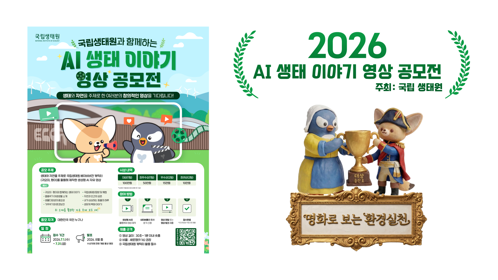
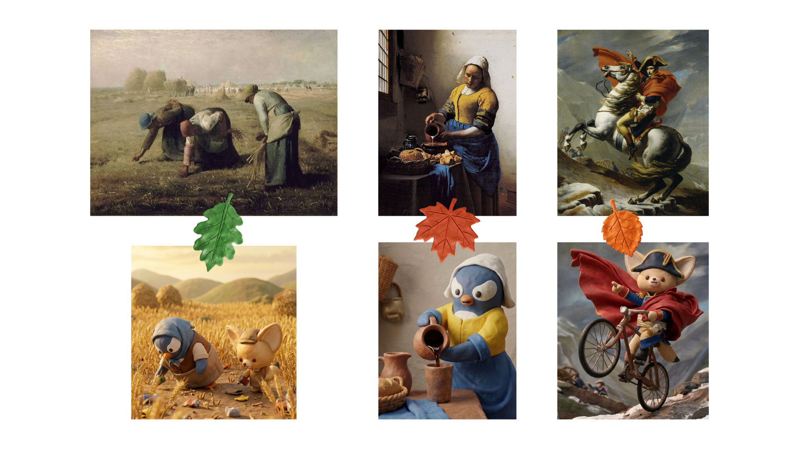
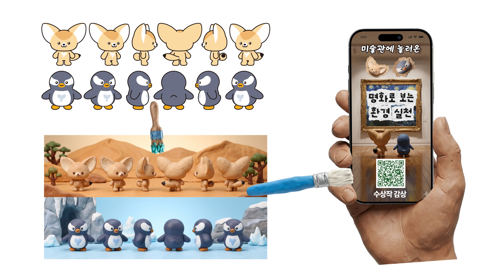

2026 · AI 생태 이야기 영상 공모전

참여계기
생성형 AI로 기획·이미지·영상·편집을 혼자 도전해 보는 계기를 찾고 있던 중에, 결과를 검증받을 수 있는 공모전을 찾게 되어 도전해 보았고 그 결과 대상을 수상하였습니다.

기획의도
환경보호 실천이라는 주제는 많이 쓰인 내용이라 생각해서 같은 내용을 말하기보다는, 바라보는 방식의 차별점을 주기 위해 재밌는 시각에서 바라보면 어떨까 하는 생각에 어릴 때 즐겨봤던 클레이 애니메이션 스타일과 미술작품이라는 컨셉을 생각하게 되었습니다.

제작과정
요구사항 : 원본캐릭터를 응용, 9:16비율
아트 스타일 : 클레이 애니메이션
사용된 AI : 구글 FLOW
기타 프로그램 : 프리미어 프로
출판편집
CASE 02

주요 담당 업무
해외 단행본 만화의 국내 정식 발간을 위한 식자·어시스트 편집 작업을 담당하였습니다.
작업 내용 및 사용 프로그램
작업 기간 : 2019 — 현재
주요 작업 : 대사 식자 디자인, 효과음 리터칭
사용 프로그램 : 포토샵(Photoshop), 일러스트레이터(Illustrator), 인디자인(InDesign)
웹툰제작
CASE 03

주요 담당 업무
기존 출판 만화를 모바일 스크롤 환경에 맞춘 웹툰 버전으로 재편집하는 작업을 진행하였습니다.